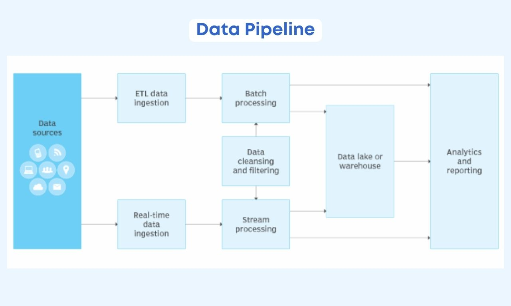

Keyboard shortcuts:
N/СпейсNext Slide
PPrevious Slide
OSlides Overview
ctrl+left clickZoom Element
If you want print version => add '
?print-pdf' at the end of slides URL (remove '#' fragment) and then print.
Like: https://wwwcourses.github.io/...CourseIntro.html?print-pdf
Building simple data integration pipelines with Python
Created for
Iva E. Popova, 2016-2024,

Data Integration Pipelines and ETL
Overview
- Data integration is the process of combining data from multiple sources and presenting it in a unified, consistent form.
- This process is crucial for businesses and organizations to make informed decisions based on comprehensive data analysis.
- Data integration pipelines are the automated workflows that handle the process of combining data from various sources into a unified and consistent format.
- Imagine them as assembly lines for data, taking various raw ingredients (data from different sources) and transforming them into a finished product (a usable dataset for analysis). 
{kind=link}
Types of Data Integration
- Batch Integration
- Data is collected, transformed, and loaded at specific intervals. Suitable for non-real-time needs.
- Real-Time Integration
- Data is processed and integrated as it is generated. Essential for applications requiring up-to-the-minute data.
- Cloud-based Integration
- Integration services hosted in the cloud, offering scalability and accessibility benefits.
ETL (Extract, Transform, Load)
- ETL is a three-step process within the broader concept of a data integration pipeline. Here's what the steps entail:
- Extract: Retrieving data from source systems.
- Transform: Modifying data to fit the target format, including cleaning, standardizing, and applying business rules.
- Load: Pushing the prepared data into a target database, data warehouse, or similar system.
- Characteristics:
- Batch-Oriented: Traditional ETL often works on batches of data, processing it at scheduled intervals (e.g., daily, weekly).
- Structured Focus: ETL is ideal for highly structured, predictable data from sources like databases and some file formats.
Data Integration Pipeline
- A data integration pipeline is a broader system encompassing ETL processes, potentially with added components and complexity.
- A pipeline might include:
- Data Extraction: Pulling data from various sources, including unstructured sources (e.g., web scraping).
- Data Transformation: Similar to ETL, but can handle more complex transformations.
- Data Loading: Sending data to storage or systems for analysis.
- Orchestration: Scheduling and managing the entire workflow.
- Monitoring: Tracking performance and error handling.
- Characteristics:
- Real-time Capable: Modern data pipelines can process data streams in real-time or near real-time for immediate insights. This is beyond the traditional ETL model.
Designing Data Integration Pipelines
- Understanding Source Data
- Begin by analyzing the source data. Understand the data format, quality, and update frequency.
- Defining Transformation Logic
- Determine the transformations required to integrate data, including cleaning, normalization, and aggregation.
- Choosing the Right Tools
- Select data integration tools based on your requirements, considering factors like scalability, ease of use, and support for different data sources.
Implementing Data Integration Pipelines
- Step-by-Step Implementation Guide
- 1. Establish source connections.
- 2. Define data transformations.
- 3. Configure the destination data store.
- 4. Schedule or trigger data integration tasks.
# Example Python code for a simple data integration task import pandas as pd # Load data from source df_source = pd.read_csv('source_data.csv') # Data transformation df_transformed = df_source.dropna().drop_duplicates() # Load transformed data to destination df_transformed.to_csv('destination_data.csv', index=False) - Monitoring and Maintenance
- Once implemented, it's crucial to monitor the data integration pipeline for errors or inefficiencies and perform regular maintenance to ensure its optimal performance.
Best Practices and Challenges
- Best Practices in Data Integration
- Automate processes as much as possible, ensure data quality, and keep documentation up-to-date.
- Common Challenges in Data Integration
- Dealing with data in different formats, maintaining data quality, and scaling the integration process as data volumes grow.
Hands-on Data Integration Pipilines
Hands-on Data Integration Pipilines
These slides are based on
customised version of
framework